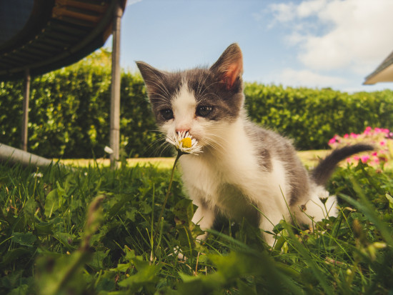

Os florais têm a mesma origem da homeopatia. O médico Edward Bach criou a terapia de florais que ficou conhecida pelo seu sobrenome. Se trata de uma medicina alternativa, com base nas tradições da homeopatia e que envolve essências de flores e plantas da natureza. É um método completamente natural.
As matérias-primas de um floral são flores, plantas, arbustos e árvores. Elas são diluídas e agitadas várias vezes para manter a energia vital no produto. Esta terapia tem como objetivo equilibrar as energias dos pacientes e curar uma doença.
Os florais podem ser oferecidos para gatos e cachorros de diferentes raças e idades. Alguns veterinários acreditam que o tratamento com florais para animais de estimação tem mais sucesso porque eles não questionam como os humanos.
